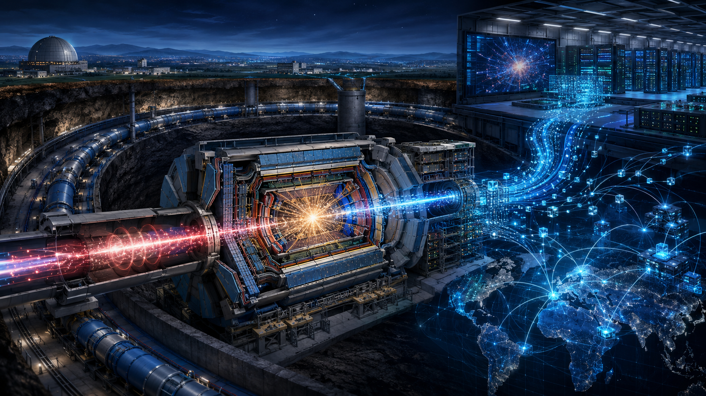
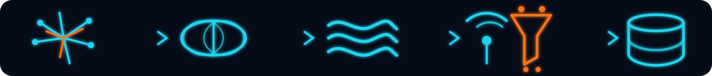
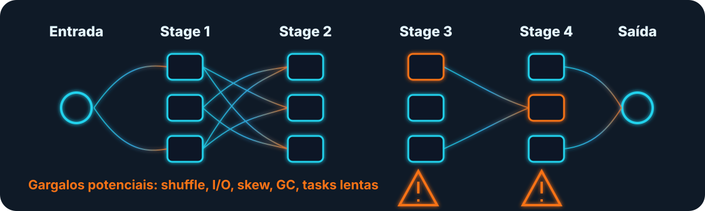
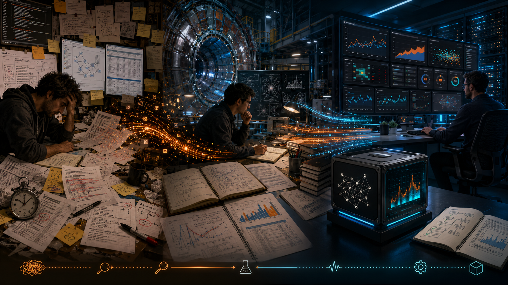

1
CERN e física de partículas
O CERN investiga a estrutura fundamental da matéria usando aceleradores e detectores gigantescos. No LHC, partículas quase à velocidade da luz colidem, e os detectores registram os sinais gerados.
Slide 1

O CERN investiga a estrutura fundamental da matéria usando aceleradores e detectores gigantescos. No LHC, partículas quase à velocidade da luz colidem, e os detectores registram os sinais gerados.
Cada colisão relevante é reconstruída como um evento digital. Em escala de LHC, sinais eletrônicos precisam ser filtrados, processados e transformados em dados analisáveis.
A escala é extrema: cerca de 1 PB/s passa pelos detectores, mas menos de 0,001% sobrevive ao trigger. Mesmo assim, o CERN ainda lida com petabytes por dia.
Esse volume não cabe em um único datacenter. O WLCG distribui processamento e armazenamento por sites ao redor do mundo, sustentando milhões de tasks diárias.

“Antes de falar do sparkMeasure, eu quero mostrar o tipo de mundo onde esse problema nasceu. O CERN não é apenas um laboratório famoso; ele é uma das maiores fábricas de dados científicos do planeta. O objetivo deles é entender a estrutura fundamental da matéria. Para isso, eles fazem partículas colidirem em altíssima energia e observam o resultado dessas colisões com detectores gigantes.
Cada colisão gera sinais eletrônicos que precisam ser reconstruídos digitalmente como eventos. O ponto importante aqui para nós, engenheiros de dados, é a escala: estamos falando de até 1 bilhão de colisões por segundo, algo na ordem de 1 PB por segundo antes dos filtros. Como não dá para guardar tudo, eles usam triggers para selecionar apenas uma fração minúscula do que vale a pena manter.
Mesmo assim, sobra dado suficiente para qualquer empresa comum parecer pequena: historicamente algo como 1 PB por dia processado no Run 2, e hoje algo perto de 3 PB por dia gravado em disco. E isso ainda é distribuído globalmente por uma malha computacional gigante, o WLCG. Então o pano de fundo do sparkMeasure é esse: dados massivos, processamento distribuído e necessidade real de entender performance.”
Slide 2
Em ambientes distribuídos, o desafio não é apenas processar, mas entender por que a execução se comporta como se comporta
Em plataformas distribuídas, rodar o processamento não basta: é preciso transformar volume em análise útil com eficiência, repetibilidade e previsibilidade.
Engenheiro de dados no CERN IT, Luca trabalha com serviços Spark e Hadoop desde 2016 e participou de iniciativas como o CMS Big Data Project.
Antes do sparkMeasure, Luca já analisava Spark com execution details, flame graphs e Linux perf counters, olhando para dentro da execução.
Spark tinha instrumentação, mas os dados ficavam espalhados. Elapsed time sozinho não explicava causa-raiz, gargalos ou uso real de recursos.

“Depois que a gente entende a escala do CERN, fica mais fácil entender o problema. Em ambientes distribuídos, o job terminar em 20 minutos ou 2 horas é só o sintoma final. A pergunta importante é: por quê? Onde o tempo foi gasto? Em CPU? Em shuffle? Em serialização? Em tasks lentas? Em skew? Em I/O?
É nesse ponto que entra o Luca Canali. Ele está no CERN IT, trabalha com Spark e Hadoop desde 2016 e vinha estudando performance Spark já nos primeiros anos de adoção. Em 2016, ele já investigava Spark 2.0 com flame graphs e perf counters, ou seja: olhando para dentro da execução, não só para o cronômetro.
Em 2017, ele verbaliza algo muito familiar para qualquer engenheiro de dados: o Spark até tem instrumentação, mas os dados estão espalhados, nem sempre são fáceis de coletar, e elapsed time sozinho não responde a causa-raiz. É justamente nessa dor que o sparkMeasure começa a fazer sentido.”
Slide 3
No contexto do CERN, o sparkMeasure leva a lógica de SRE e observabilidade para workloads Spark

Luca Canali publica a ideia central: medir jobs Spark por dentro, coletando métricas de execução em vez de olhar apenas para o tempo total.
A ferramenta organiza evidências como CPU, I/O, shuffle, GC, skew e tasks lentas para transformar lentidão em diagnóstico técnico.
O sparkMeasure deixa de ser apenas experimento: ganha listeners, relatórios mais simples e vira apoio prático para troubleshooting em workloads Spark reais.
A ferramenta evolui para biblioteca, uso programático e modo Flight Recorder, registrando métricas para análise posterior sem depender só da observação manual.
“Então o sparkMeasure nasce como resposta muito direta a uma dor prática. Em 2017, o Luca publica um texto que praticamente funda a narrativa da ferramenta: precisamos ir além do elapsed time, precisamos coletar métricas de workload, e precisamos de um meio mais simples de transformar a instrumentação nativa do Spark em algo útil para análise.
O sparkMeasure entra exatamente aí: ele encapsula a coleta, organiza os dados, facilita a análise e usa Spark listeners como base. Em 2018, o Luca já fala dele como ferramenta de troubleshooting e diz explicitamente que o pessoal do serviço de Spark e Hadoop do CERN achou a ferramenta útil. Ou seja: ela não nasce como um experimento distante da prática; ela nasce de uso real, em um ambiente que tem carga, escala e responsabilidade.
Para o aluno, essa é a mensagem principal: sparkMeasure é uma lente de observabilidade. Ele ajuda a transformar ‘meu job está lento’ em algo mais engenheirável: ‘meu job está lento por causa de X, Y e Z, e eu consigo medir isso’.”
Síntese
No contexto do CERN, observar Spark não é sofisticação: é engenharia básica para transformar execução distribuída em evidência mensurável.